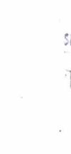
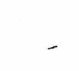
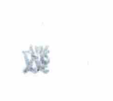
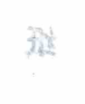
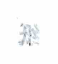
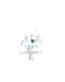
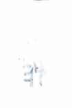
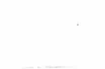
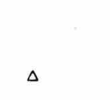

### Lecture 1: Introduction to Computer Networks
Computers, information resources, and people are the three main elements of the network world. Network integration, universality, and modern network's main characteristics are connectivity, economy, scalability, reliability, and adaptability. Basic issues include telephone networks, circuit switching, time division switching, and hierarchical addressing. Telegraph networks use circuit switching, storage forwarding, and message switching. Computer networks use packet switching, statistical time division, circuit switching, and routing, forming a hierarchical network.
### Lecture 2: Network Architecture Design
1. **Concept of Services and Protocols in Layered Models**
- **Service**: The relationship between layers. - **Protocol**: The relationship between peer entities at the same layer.
2. **OSI Seven-Layer Model: Physical Layer, Data Link Layer, Network Layer, and Transport Layer Services**
- **Physical Layer**: Direct point-to-point bit stream transmission. - **Data Link Layer**: Point-to-point link transmission, error handling, and medium access control. - **Network Layer**: Data transmission between nodes, routing. - **Transport Layer**: Provides end-to-end communication and a certain level of service quality.
### Lecture 3: Reliable Communication
1. **Physical Layer Services**
- NRZ: 0 low 1 high, baseband transmission, clock recovery, continuous 0. - MRZI: 0不变1变, clock recovery, continuous 0. - NRZI: 0不变1变, clock recovery, continuous 0. - 4B/5B: 5b encoding 4b, continuous 0 not allowed, no clock recovery problem. - Cyclic Redundancy Check (CRC): Error detection and correction.
2. Various framing techniques - advantages, disadvantages, and application scope
1. Time interval method: frame interleave 2. Control character method: frame header inserted, frame delimiter (STX, ETX) 3. Character fill boundary method: control characters or special characters in the text are placed at the beginning of the frame. 4. Bit fill boundary method: 01111110 as frame boundary marker, 5 consecutive 1s or 6 consecutive 0s in the text are added 0. Error detection and correction can be performed. Total bits = M + ⌊M/K_max⌋
3. Stop-and-wait, selective retransmission ARQ and its working principle, as well as the selection of sequence number space size (CCS)
1. Stop-and-wait ARQ Receive window 0..1, send window 0..1. Efficiency = D_Tp / (D_Tp + D_A + 2D_p), RTT = 2D_p. Sequence number space: SN = i or i+1, RN = i or i+1. Efficiency can be improved through parallel stop-and-wait ARQ. 2. NARQ Receive window = 1, send window SN_max - SN_min. Sequence number space: m ≥ 1 + SN_max - SN_min. 3. Selective retransmission ARQ Receive window = send window = SN_max - SN_min = RN_max - RN_min + 1 Sequence number space: m ≥ 2(SN_max - SN_min) Improved: increase window size, multiple retransmission
3. Medium access control algorithm basic classification
1. Medium access control algorithm basic classification 2. Random access: use resources, detect collisions, resolve collisions 3. Reservation: have a reservation plan, allocate resources, time division, no collision 4. Round-robin: determine the order of resource access, no collision
2. Random access, reservation access, and polling access algorithms. Basic principles and performance analysis.
1) Random access. 1) ALOHA. - Collision period: 2 × frame transmission time. S = G e^(-2G) ≤ 0.184. 2) Slotted ALOHA. - Slot time. (Hard synchronization) - Collision period: slot transmission time. S = G e^(-G) ≤ 0.368. 3) CSMA. - Listen before transmit. If idle, transmit. If busy, wait. If collision, transmit. If no collision, wait. - Collision period: D_{pmax}. 4) CSMA/CD. - Random wait. - Collision period: D_{pmax}. Avoid collisions, longest frame 2D_{pmax}.
2. Reservation access (with time synchronization).
1) Basic reservation.
- M users, M time slots, time division. Listen within reservation time to determine if to transmit.
- Few users, time slots wasted. Channel utilization rate: kδ/(N + kδ), k ∈ [1, N].
2) Slotted reservation.
- M users,
1) Centralized Control - Centralized Control Sequence: 0101020102030 - Total Waiting Time = 2(3D1 + 2D2 + D3) (Round-robin sequence 0102030, each station sends)
2) Distributed - Distributed Structure: 012121310 - Total Waiting Time = 2(D1 + 2D2 + D3) (Round-robin sequence 0121310, each station sends)
3) Ring (Logical Ring, Physical Ring) - No Central Node, Each Station Maintains Ring Downstream: 0123210 - Total Waiting Time = 2(D1 + D2 + D3) (Round-robin sequence 01230, each station sends)
3. Token Ring Network Design and Implementation (Logical Ring) - Frame Format - 01111110: Idle Token - 01111111: Token
- Token Ring Frame Acknowledgment: - A=0 C=0: Target does not exist - A=1 C=0: Error frame; receive NAK. - A=1 C=1: ACK.
- Ring Delay = Ring Length × Bit Rate / Bit Rate + Node Count × Node Processing Delay (bit) - Token Ring Time = Active User Count × Token Holding Time + Ring Delay - Interframe Interval = Total User Count × Token Holding Time + Ring Delay - Throughput = Frame Length / Bit Rate × Frame Length + Ring Delay + Idle Token Transmission Delay
4. Ethernet Principles and Implementation (MAC Sublayer) - CSMA/CD + Binary Exponential Backoff (Divide the time after collision into 2T time slots)
1. Medium Access Control (MAC) Algorithm Scalability Issues
Frame Structure: 6B Destination Address + 6B Source Address + 2B Length/Type + 46-1500B Data + 4B Checksum Transmission Method: Broadcast + Selective Reception Physical Layer → Signal Transmission MAC Layer → Transmission Timing
2. Difference Between Repeaters, Hubs, Ethernet Bridges, and Ethernet Switches
Repeaters: Physical Layer, Amplify Hubs: Physical Layer, Multi-port Repeaters, No Collision Domain Bridges: MAC Layer. MAC帧通过隔离，存储转发，隔离冲突域（以太网到以太网） Switches: MAC Layer. Microsegmentation, no collision domain, full-duplex, no collision (due to switch internal switching)
3. Ethernet Bridge Working Principle (Expanding the number of collision domains in Ethernet)
1. Self-study 2. Spanning Tree BPDU (Bridge Protocol Data Unit) (Root ID, Source ID, Cost)
1) Assume it is a bridge. Insert own ID into root ID and source ID. Set cost to 0. 2) Broadcast and receive BPDU, select optimal BPDU (root ID smallest, root ID equal to smallest root ID) 3) Send BPDU (root ID = smallest root ID, source ID = root ID, cost = smallest root ID corresponding smallest cost + 1) Root port: Port with lowest cost. Designated port: Port with BPDU cost lower than other ports (root ID of designated port is the root ID of BPDU). 4) Repeat step 2. Result: Construct a spanning tree. The root bridge has the lowest cost. Other bridges are not certain. Impact: The broadcast limit restricts the network scale.
### Chapter Eight: IP Address Structure
1. **IP Address Evolution**: ABC Class → Classless Inter-Domain Routing (CIDR). 2. **CIDR Basics and Advantages**: CIDR allows for variable-length subnet masks (VLSM), which can be more efficient than fixed-length masks. It reduces the number of routing entries in the routing table and allows for more efficient use of IP addresses. 3. **Simple Network Address Planning and IP Assignment**: The number of hosts + 2 ≤ 2^(number of bits), where the number of bits is determined by the network mask. Gateways and servers can be assigned any IP address.
### Chapter Nine: Routing Algorithms in Internetworks
1. **Distance Vector Algorithm**: Calculates the shortest path between nodes. Each router maintains a routing table that lists the best-known distance to each destination and the path taken. Routers exchange routing information with their neighbors to update their routing tables. The algorithm is simple but can be slow to converge and prone to routing loops. 2. **Link State Algorithm**: Calculates the shortest path between nodes. Each router maintains a link state database that includes the state of all links in the network. The algorithm is more complex but can converge faster and is less prone to routing loops. The algorithm uses the Dijkstra shortest path algorithm to find the shortest path from the source to the destination.
### Chapter Ten: Heterogeneous Network Interconnection
1. **Connection-Oriented vs. Connectionless Data Forwarding**: - **Connection-Oriented Data Forwarding**: Establish a virtual circuit (VCC) between the source and destination. Data is transmitted in segments along the established circuit. The circuit is terminated when the last segment is received. - **Connectionless Data Forwarding**: Data is transmitted in packets without establishing a virtual circuit. Each packet is independently routed and may follow a different path through the network. The packets are reassembled at the destination.
2. **Data Forwarding Process**: - **Connection Establishment**: The source and destination agree on a connection. The connection is established using a signaling protocol. - **Data Transmission**: Data is transmitted in segments along the established connection. Each segment is acknowledged by the destination. - **Connection Termination**: The connection is terminated when the last segment is received. The signaling protocol is used to terminate the connection.
2. Comparison of advantages and disadvantages of connection-oriented and connectionless protocols.
Connection-Oriented - Management: Based on the order of connections, grouped by the same destination address. - Connection Status: Based on the connection table. - State Change Frequency: Establishment and termination of connections. - State Association: Association between connections. - Resource Allocation: Supports heterogeneity: IP over everything, everything over IP.
Connectionless - Management: Based on the address table. - Connection Status: Based on the address table. - State Change Frequency: Network structure changes. - State Association: Unrelated. - Resource Allocation: Supports heterogeneity: IP over everything, everything over IP.
3. Complete IP address resolution process, IP address and MAC address relationship.
1. Network internal address (IP & mask = network IP & mask) 1. ARP (Address Resolution Protocol) dynamically builds IP → MAC mapping table. 2. The target IP is not in the ARP table. Broadcast ARP packet (own IP, own MAC, target IP). 3. Same network target IP responds, caching this information in its ARP table. Other hosts update their ARP tables.
2. Network external address. 1. Missing gateway (neighbor router) MAC not in ARP table. Broadcast ARP packet to obtain MAC (network internal address). 2. Forward the packet to the missing gateway. The router forwards based on the destination address (continuously updating MAC addresses). 3. Reach the gateway of the target network. The router forwards the packet to the target based on the network internal address.
Router: Spanning broadcast domain.
3. DHCP: Dynamic Host Configuration Protocol Broadcast DHCP Discover message to obtain DHCP service, obtain own IP via MAC.
11. IPv6 technology special topics. 1. IPv6 basic principles 40B header + extension header 1 + extension header 2 + ... upper layer PDU TLA + NLA: ISP + SLA MAC ↔ IP
Router fragmentation: Data packet length > MTU. Forward data packet over long warning, discard data Extension header: Quality of service, mobility, security.
1. Mobile IP basic principles.
IPv4: 1) Mobile nodes check connections in home networks or foreign networks. In foreign networks, they obtain a foreign address from a foreign agent and register it with a home agent. 2) Data destined for home addresses is sent through tunneling technology (adding new headers to the original data) to the foreign address (foreign agent or mobile node). 3) Mobile nodes send data directly, without tunneling. The source address is the home address, and the destination address is the foreign IP. Note: When a mobile node sends data to a home address in the same network segment as the home agent, the data may be dropped by the foreign agent's network gateway. Because the original IP and the foreign IP are in the same network segment, no routing is required.
IPv6: 1) ... in foreign networks, they automatically configure a foreign address. 2) ... the connection request is sent to the mobile node. The mobile node's response message contains its current foreign address (using an extension header). The communicating end uses the response to determine the home address and foreign address. 3) Direct communication, no agent. The source address is the foreign address (mobile node). The destination address is the home address (mobile node). The header is extended; the target option is extended.
3. MPLS: Multi-protocol label switching.
MPLS header between IP header and lower header. - Each entry in the routing table is marked, and the marking distribution protocol informs the router of the marking. This improves forwarding efficiency. - Forwarding: from table lookup to table lookup; routing mode: unchanged. (Marking and forwarding are based on the routing table, with the connection established by the router.) - Marking switching network, according to the marking for forwarding, also allows the router to forward packets before the marking is set.
MPLS ATM Forwarding Marking Routing Standard routing algorithm Establish virtual circuit Marking establishment: based on the routing table, using the marking distribution protocol to establish virtual circuits. Edge Forwarding Marking
Advantages: longest path distance calculation after being marked by the intermediate marking router; complexity is pushed to the network edge;
### Lecture Notes on Transport Layer and Congestion Control
1. **Transport Layer Services and Their Implementation:** - **Multiplexing and Demultiplexing:** Using (source port, destination port) to establish connections. - **Service Switching:** Selective retransmission ARQ, through measuring each RTT and RTT statistics. - **Congestion Control:** AIMD.
2. **TCP Reliable Transmission and Data Link Layer ARQ Comparison:**
| TCP | LLC | |----|-----| | Reliable Transmission Range | Entire Network | Conflict域 | | Protocol | Selective Repeat | Selective Repeat | | RTT | Estimated | 2Dpmax | | Packet Loss | Router Buffer Overflow | Link Layer Overload |
3. **Transport Layer Congestion Control Goals:** - Determine appropriate user rate to avoid congestion caused by overloading. - Network should operate in a non-congested state. SR = W x MSS / RTT
4. **TCP Tahoe and TCP Reno Window Adjustment Process:**
- **TCP Tahoe:** 1. When starting or recovering from congestion, use slow start, cwnd = 1, cwnd = cwnd x 2 (RTT) 2. When cwnd = ssthresh, start congestion avoidance, cwnd = cwnd + 1 (RTT) 3. Packet loss: cwnd = cwnd / 2, ssthresh = cwnd / 2. - **TCP Reno:** - Slow start: cwnd = cwnd + 1 (ACK); Congestion avoidance: cwnd = cwnd + cwnd (ACK) 1. When starting or recovering, use slow start, cwnd = 1, cwnd = cwnd x 2 (RTT) 2. Same as (1). 3. Detecting duplicate ACKs (three), immediately retransmit, cwnd = cwnd / 2, reinitialize congestion avoidance. 4. Continuous packet loss causing timeout, cwnd = cwnd / 2.
5. **TCP Transmission Rate and Packet Loss Rate Relationship:**
$$ \frac{2}{3}w = \frac{1}{p} - 1 \Rightarrow w \approx \sqrt{\frac{3}{2p}} $$
6. AIMD Algorithm and Vector Diagram Analysis
Two-user scenario: single bottleneck bandwidth C; system state: x1 bps, x2 bps. Efficiency line: x1 + x2 = C. Fairness line: x1 = x2 AIMD: converges to efficiency, fairness, and bandwidth optimization. => TCP Reno.
13th Lecture P2P Systems and Applications
1. P2P technology characteristics and typical applications. Characteristics: decentralized resource utilization and peer-to-peer management. Applications: file sharing, information management, P2P computing...
2. Unstructured P2P system query principle (Gnutella network) Flooding query; overlay network (application-level virtual network).
3. Unstructured P2P query efficiency and overlay network topology relationship N x N -> O(log N).
4. Structured P2P system query principle (DHT and Chord algorithm). DHT: Distributed Hash Table -> O(log N).
(1) Information distribution method Circular naming space 0~N-1; Hash1 (node); Hash2 (resource) stored in the nearest successor node. (2) Node interconnection method Each node stores the next node's routing pointer. (3) Information search method. Sequentially traverse the nodes on the ring, find the resource pointer node, and use its given network IP to find the resource.

Chapter 1: Computer Network Architecture
1. Computer Network Architecture (1) Protocol and Service Concepts [Protocol: Layered, peer-to-peer entity information exchange rules. Service: Layered, layer-to-layer information exchange rules. Upper layer: User; Lower layer: Provider]
(2) SAP, LDU, SDU, PCI, PDU n+1 layer: LDU: [IC|SDU] n layer: [IC] n-PDU: [PCI|SDU]
2. ISO/OSI Reference Model (1) Layered structure advantages and disadvantages Advantages: Modular, independent, flexible, standardized. Disadvantages: Low efficiency
3. TCP/IP Reference Model (1) TCP/IP Layered Structure Application Layer: Supports network applications and provides network interfaces. Transport Layer: Achieves end-to-end data transmission between hosts and networks. Network Layer: Performs addressing and routing. Physical Layer: Implements physical layer functions.
### Computer Network Architecture
1. **Layer n+1** - **IDU**: Interface Data Unit - **SDU**: Service Data Unit - **LCI**: Layer Control Information - **SAP**: Service Access Point
2. **Layer n** - **LCI**: Layer Control Information - **SDU**: Service Data Unit - **n-PDU**: n-Protocol Data Unit
3. **Service Classification** - **Connection-Oriented**: Connection-oriented - **Connectionless**: Connectionless
4. **Protocol Principles** - **Request**: Request - **Indication**: Indication - **Response**: Response - **Confirm**: Confirm
### TCP/IP Reference Model
1. **Data** - **Segment Header**: Data - **Network Header**: Segment Header Data - **Frame Header**: Network Header Segment Header Data Frame Trailer
2. **Transmission Mode** - **Point-to-Point**: Point-to-point - **Half-Duplex**: Half-duplex - **Full-Duplex**: Full-duplex
3. **Physical Layer Interface and Protocol** - **Bit Rate**: Bit rate, number of bits transmitted per second

Chapter 3: Physical Layer Technology
1. Data Communication Theory Basics
- Baud Rate (baud): The number of signal changes per second. - Bit Rate (bit): The number of binary digits transmitted per second.
2. Data Communication Techniques
1. Encoding Techniques
- NRZ: Non-Return-to-Zero, no transition, direct current level. - Manchester: Data is encoded by alternating between high and low levels. - Differential: A transition between 0 and 1 indicates a 1; no transition indicates a 0. - Manchester Encoding: A transition between 0 and 1 indicates a 1; no transition indicates a 0. - Differential Manchester Encoding: A transition between 0 and 1 indicates a 1; no transition indicates a 0.
2. Multiplexing Techniques
- Time Division Multiplexing (TDM) - Frequency Division Multiplexing (FDM) - Wavelength Division Multiplexing (WDM)
3. Switching Techniques
1. Circuit Switching - Data is transmitted in a continuous stream. 2. Packet Switching - Data is divided into packets and forwarded. 3. Virtual Circuit Switching - Data is transmitted in a continuous stream. 4. Circuit Switching - Data is transmitted in a continuous stream.
Noise: $2H\log_2V$ (for V-level) Random noise: $H\log_2(1+\frac{S}{N})$ (for S/N ratio)
Digital data transmission: Baseband transmission Non-return-to-zero (NRZ), Manchester code, Differential Manchester code
Digital data transmission: Broadband transmission ASK, FSK, PSK
Analog data to digital transmission CPM (Continuous Phase Modulation), Differential Pulse Code Modulation, QAM
TDM FDM WDM
Circuit switching: Establish circuit, transmit data, release circuit; Time Division Multiplexing Packet switching: Data packets: Different paths, different circuits; Circuit switching: Different paths, establish circuit, release circuit. Frame switching: Data frames: Different paths, establish circuit, release circuit.
Data Link Layer: Definition and Function Function: Provide data transmission service for network layer; Framing; Error control; Flow control.
1. Provide service for network layer Unacknowledged connection: Most wired networks Acknowledged connection: Wireless networks Acknowledged connection: Telephone networks
2. Framing Bit stuffing method Mark bit stuffing method Byte stuffing method Mark bit stuffing method with byte boundary method Bit stuffing method with byte boundary method

3. Physical Layer and Protocol 1. Definition and Function Definition: Initiate, maintain, and terminate data link layer entities for bit-by-bit transmission of physical connections. Function: Provide transparent bit-by-bit transmission between network devices.
2. Physical Layer Characteristics Electrical, functional, procedural, and mechanical.
3. Typical Physical Layer Standard Interfaces: RS-232C → RS-422
4. Transmission Mediums Bare wire, twisted pair, coaxial cable, and optical fiber.
Chapter 4 Data Link Layer Technology 1. Data Link Layer Definition and Function Definition: Error-free transmission on a data link layer. Function: Provide data transmission services, frame, error control, and flow control.
2. Error Detection and Correction 1. Error Detection: Hamming Code Insert a parity bit in the 2nd position, equal to the sum of all bits in the frame. If the parity bit is incorrect, there is an error. 2. Error Correction: CRC Checksum The CRC code is added to the data after transmission. The data is divided by the same number of bits as the divisor. The remainder is the error code. The error code is added to the data after transmission.
The text is incomplete and contains some errors in the explanation of the CRC checksum. The correct formula should be: The data is divided by the divisor, and the remainder is the error code. The error code is added to the data after transmission.
3. Error Control - Timer + Sequence - Error characteristics: random, continuous burst - Error correction: Hamming code (detects d errors; corrects d errors; detects 2d errors; corrects 2d errors) - Error correction + retransmission: CRC, modulo 2 division
4. Flow Control - often implemented in the transport layer 1. Unconstrained half-duplex 2. Half-duplex with ACK: ACK 3. Half-duplex with ACK and sequence numbers: ACK and sequence numbers 4. One-bit sliding window: ACK = 1, no retransmission, ACK and sequence numbers 5. n-frame sliding window: ACK = 1, ACK > 1, no retransmission, ACK and sequence numbers 6. Selective repeat: ACK > 1, retransmission, ACK and sequence numbers
5. Local Area Network Technology - Medium Access Control MAC 1. Static channel allocation: TDM, FDM, WDM 2. Dynamic channel allocation: 1) Pure ALOHA: after collision, wait a random time before retransmit. Collision window: 2L 2) Slotted ALOHA: fixed slots, other times. Collision window: L 3) CSMA: carrier sense multiple access with collision detection: after collision, wait a random time before retransmit. Persistent: always listen for idle slots. Non-persistent: listen for idle slots, other times. Collision window: 2Lmax 1) Basic algorithm: Nhost, Nslot, collision probability: α/(N+α), retransmission probability: α/(α+1). 2) Binary exponential backoff: number of collisions: α, retransmission probability: α/(α+log2N).

3. Basic Data Link Layer Protocol - Unidirectional, bidirectional, half-duplex channels
4. Sliding Window Protocol - Unidirectional to bidirectional; retransmission reduces "frame arrival" interruptions. (1) One-bit sliding window Win = 1, sequence number: 0, 1 (2) N frames later RWin = 1, receiver buffer size: 1 (3) Selective retransmission Sender window: MaxSeq, receiver window: (MaxSeq + 1) / 2, receiver window does not overlap
5. Common Data Link Layer Protocols - Frame structure: start delimiter, address field, control field, data field, checksum - Frame types: data frames, control frames, null frames
6. Token Ring Technology (1) Competitive Data Link Layer Protocol 1) Pure ALOHA, slotted ALOHA - Collision random retransmission (collision window: 2D/D), retry (wait/ retry/ random) 2) CSMA/CD - Collision random retransmission (collision window: 2D/D), retry (wait/ retry/ random)
MAC layer: no acknowledgment and flow control LLC sublayer: has acknowledgment and flow control => HDLC protocol.
Six. Ethernet technology, bridge technology, and token ring technology.
802.3: Physical layer: Manchester encoding; repeaters; twisted pair standards;集线器 (duplex ratio = 2×10^8) MAC layer: 7-byte header, 6-byte source address, 2-byte length, 0-1500 Data, 0-46 padding, 4 checksums. CSMA/CD + binary exponential backoff
Bridge: expands local network segments; collision domain: within connected LANs, store and forward. Source address learning Destination address forwarding Forwarding table (destination address to bridge port mapping) Unknown address flooding Spanning tree algorithm: broadcast BPDU, smallest root bridge,以此生成最小生成树 Root bridge (bridge) broadcasts its own BPDU Compare the cost of receiving BPDU at each port Compare the cost of receiving and forwarding Close the port with the highest cost.
Token ring: 3-byte token, has a token when sending information. After reaching the end, the station releases the token.
Seven. Network layer technology Function: select routes, provide services for the transport layer; split broadcast domain and collision domain. Connectionless service. $ \{ \text{虚电路} \}$ $ \{ \text{数据报} \}$
2) Ethernet technology - Medium Access Control (MAC) address format: 7B preamble | 1B start delimiter | 6B frame control | 6B source MAC | 6B destination MAC | 2B length | 0~1500B data | 0~46B padding | 4B cyclic redundancy check (CRC) - Minimum frame length (for collision detection): 64 bytes - CSMA/CD + binary exponential backoff (time after collision is divided into 2^n time slots)
1) Bridge working principle (local area network switch: multi-port bridge): expand local area network segments, isolate collision domains - Source address learning and forwarding - Unknown address forwarding
2) Spanning Tree Protocol - BPDU: Bridge Protocol Data Unit - Broadcast BPDU, smallest cost as root, root bridge sends BPDU - Compare each port's received BPDU cost - Compare own cost, determine receiving port - Close port receiving BPDU with the highest cost
Chapter 2: Network Layer Technology 1. Network Layer Technology Overview - Routing, switching: routing, switching; providing services for the transport layer
IP Protocol:
bit: $$ 4 Version, 4 IP header length, 8 service type, 16 total length, 16 checksum, 1 NUL, 1 DF, 1 MF, 13 offset (8-byte boundary), 8 TTL, 8 Protocol, 16 header checksum, 32 source, 32 destination... $$
IP address: Classless Inter-Domain Routing (CIDR), longest prefix match principle. {All 0: Local/Host} {All 1: Broadcast}
ICMP: Internet Control Message Protocol; Ping; used for IP packets. ARP: Address Resolution Protocol; IP -> MAC; ARP table RARP: Reverse Address Resolution Protocol; diskless workstation; MAC -> IP
Routing Protocol: 1. Static Routing: Manual configuration; default routing (not reachable automatically) configuration. 2. Dynamic Routing: 1) Distance Vector Method: Periodic exchange of routing tables (address | port | cost). Converges slowly. Level Splitting: Does not split routing information from neighbors. Toxic Reverse: Set faulty IP to infinity. Triggered Update: If network state changes, no wait time, immediately send update information. RIP: Hop as cost (max = 15), 30s update, TTL = 180s. 2) Link State Method: Periodic exchange of LSP (neighbor link state | cost | sequence number | TTL) => Dijkstra OSPF: Area internal LSP triggered update, area inter-area distance vector method. (Area divided into sub-areas).
Autonomous System (AS) ...



2. Virtual Circuits and Data报 Issue. Datagram Subnet VC Subnet. - Circuit Establishment: X √ - Address: Source IP & Destination IP Short VC Number - Status Information: X √ - Routing: Independent routing per VC VC Routing - Congestion Control: See Transport Layer Each VC has its own buffer
2. Internet Network Layer Protocols ① IP - Version: 4 bits - Header Length: 4 bits - Service Type: 8 bits - Total Length: 16 bits - Identification: 16 bits - Flags: 1 bit - Fragment Offset: 13 bits (mod 8 = 0) - Time to Live: 8 bits - Protocol: 16 bits - Header Checksum: 16 bits - Source Address: 32 bits - Destination Address: 32 bits - Options: ≤ 40 bits (mod 4 = 0) - All 0: Local Network/Local Host; All 1: Broadcast Address - CIDR: Classless Inter-Domain Routing: Subnet Mask, Longest Match ② ARP / RARP - IP -> MAC: Within the same network: Use ARP table; Between networks: Query gateway.启动生成子网广播 - MAC -> IP: Used for workstation startup ③ ICMP: Internet Control Message Protocol - Message Encapsulation in IP packets: Ping

3) Border Gateway Protocol (BGP).
Hierarchical routing reduces the size of the routing table and reduces the amount of routing updates. Inter-domain routing: emphasizes policies. Transmits routing information through TCP, distance-vector method.
IPv6. 128-bit address, 13 to 7 domains. No IHL, Protocol, Checksum. Hosts and routers不分段. IPv4 to IPv6: dual stack; tunneling; (for IPv4 traffic)
Transport Layer Technology. Function: eliminate the unreliability of the network layer. Services: - Connection-oriented: service model: connection-oriented service - Connectionless: Berkeley Sockets.
DPDU header | NPDU header | TPDU header | TPDU payload DPDU payload NPDU payload TPDU payload
Address: Transport Service Access Point (TSAP) (IP address, port).
{Pre-arranged connection - Name server or domain name server lookup: => initial connection protocol.
Establishing connection's three-way handshake: A sends a sequence number X CR TPDU B sends a sequence number Y CC TPDU, confirming A's sequence number X CR TPDU. A sends a sequence number X+1 and the first data TPDU, confirming B's sequence number Y CR TPDU. Establishing connection's three-way handshake + timer mechanism.
3. Dynamic Routing Protocol ① Intra-area routing protocol - Distance Vector: Exchanges routing information with all neighbors (Routing Table). RIPv2 - Link State: Exchanges link state information with all nodes (LSR). OSPF Slow convergence -> Level Splitting (Split Horizon), Poison Reverse (Infinite Loop), Triggered Update (Clock) Fast convergence -> Area Division, Layered Routing, Border Routing Table
② Inter-area routing protocol - Border Gateway: TCP connection, path vector algorithm, strategy. BGP (Origin, Next Hop, AS Path)
4. IPv6 128 bits, 7 fields: - Version: 4 bits - Traffic Class: 4 bits - Flow Label: 24 bits - Payload Length: 16 bits - Next Header: 8 bits - Hop Limit: 8 bits - Source Address: 128 bits - Destination Address: 128 bits
Chapter 6: Transmission Layer Technology 1. Transmission Layer Services - Eliminate network layer's unreliability. Connection-oriented service, connectionless service. - Transmission User (Application) through Transmission Layer Services, using sockets to access.
2. Transmission Layer Protocol - Initial connection establishment: Application layer (application) through transmission layer services, using sockets to access.
Transport entity (transport entity) for each connection has its own buffer, storing TPDU. Flow control: sliding window protocol, receiver buffer determines sender window size. Dynamic sending TPDU.
TCP: Access mode: both parties create sockets (IP address, port number). Each connection: (socket 1, socket 2) = point-to-point. No broadcast, no multicasting. Segmentation and sequence number allocation. Segment size limited by IP packet header length limit and data link layer MTU limit (e.g. 1500). Reliable transmission: sliding window protocol. Flow control and congestion control: slow start + congestion avoidance MSS: Max Segment Size. TCP Reno: fast retransmission + fast recovery.
UDP: No need to establish, no congestion control: used for P2P, DNS, SNMP. Application of RTP: network media RTCP: transport control information, RTP stream synchronization.
Application layer protocol: Application program part, utilizes lower layer protocols to provide services. API: application programming interface.
There are two types of service programs at the TSAP:
1. With service programs at the TSAP -> connection. 2. Without service programs at the TSAP -> process server generates service programs to inherit and connect to the client. The process server returns to continue listening.
- Three-way handshake scheme for connection - Three-way handshake + timeout scheme for releasing connection - Variable sliding window protocol for flow control, periodically sending TPDU
3. Internet transport layer protocol
1. TCP: Transmission Control 1) Connection management
Establish connection: server Listen, accept; client Connect. TCP: SYN=1, ACK=0. Server RST (process listening) or SYN=1, ACK=1 (process listening). Client SYN=0, ACK=1.
Release connection: FIN=1, start timer, other side (FIN=1) ACK=1, start timer ACK=1, close connection, timeout also closes connection.
2) Reliable transmission
Based on confirmation and variable window size; URG (1 BYTE) to prevent deadlock. The sender sends a large segment and retransmits after receiving ACK. The receiver reserves half of the window size and updates the window size when the ACK is received.
DNS server UDP connection UDP packet from local DNS server sends request Local DNS server cannot resolve when DNS server is not available, becomes upper DNS server as client Resolution successful -> sends UDP resource record (5-byte group), local DNS server also stores it Email: SMTP protocol TCP connection SMTP server process: 25 port Message queue <--- as TCP proxy to target SMTP server Login receive -> mailbox <--- from target server's TCP proxy Send email SPOP3: download LMAP: not download MIME: support for image formats WWW service: HTTP protocol TCP connection FTP TELNET Web server process: 80 port URL includes {protocol type} {webpage's host address (domain/IP)} {filename of webpage}
3) Congestion Control RTT: round trip time Cwnd: Crowd Window MSS: Max Segment Size AIMD: Additive Increase/Multiplicative Decrease TCP Reno: fast retransmit + fast recovery + timeout
4) TCP Segment Structure, Control Bits 16b Source 16b Destination 32b Sequence Number (in bytes) 32b Acknowledgment Number (in bytes) 4b Header Length 6b Reserved 6b {URG, ACK, PSH, RST, SYN, FIN} 16b Checksum 16b Urgent Pointer (used with URG flag)
Optional fields: MSS (eg 1460) WScale (Real Window Size = Win x 2^wscale)
UDP: User Datagram Protocol (RDP, DNS, SNMP, FTP, RTCP...)
Chapter 7: Application Layer Technology 1. Application Layer Overview 16b Source 16b Destination 16b Length 16b Checksum No connection, no handshaking, no congestion control, no flow control
2. Client/Server Model

3. DNS Service (53 points) - Client UDP local DNS server (query resolver) → - Query → UDP response → (cache, time-to-live) - Can't → UDP upper DNS server → - Resource record components: Domain name, TTL, Type, Class, IP (Value).
4. Email (25 points) - Client TCP SMTP server, send email → - Address in this server → store email → POP3/IMAP: download/undownload. - Address in other SMTP server → send email to queue → - Compose, send, report, display, process.
5. WWW Service (80 points) - URL: Uniform Resource Locator: Protocol (HTTP, FTP, Telnet); IP/DN; filename.